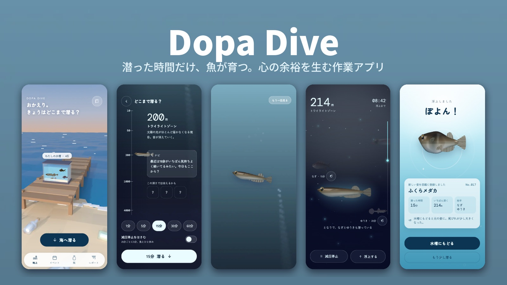

メインプロダクト・2人チーム
Dopa Dive（旧 Pond）
作業時間を決めると相棒の魚が深海へ潜り、潜った時間だけ魚が育つ作業アプリです。前身の学習記録SNS「Pond」で技育博に出展しました。そこでのフィードバックをもとに、コンセプトから作り直しています。
- ネガティブな感情を生まない設計：ランキング・連続記録・いいね数を置かない、という判断基準を先に言葉にし、それに合わない機能は外しました。
- 量ではなく「形」が変わる成長：潜った時間と深さで、魚の体の細さや目の大きさが変わります。実際の魚の研究をもとにデフォルメしており、優劣が生まれません。
- 役割：企画・UX設計・UIデザイン・フロントエンド実装、魚の3Dモデル（Blender）を担当（バックエンドは相方）。